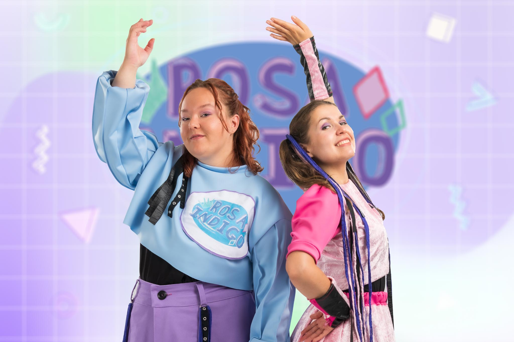
2023
Rosa Indigo — Barnens Estrad
Du är bra som du är!
- Manus, regi & koreografi: Matilda Anttila
- Musik: Rebecka Sretenovic & Thomas Nylund
- Publik: 5–9-åringar
- Project link
Theatre · Performance · Children's Culture · Arts Management
Theatre maker with a particular focus on performing arts for young audiences. Her work combines theatre, music and movement, and she is interested in scenic forms where the audience is actively involved in the experience. She has work experience as an actor, director and playwright, and has worked as an artistic director as well as in audience engagement for children’s theatre.
Helsinki, Finland

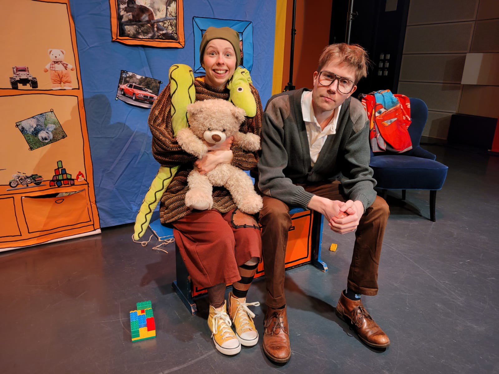
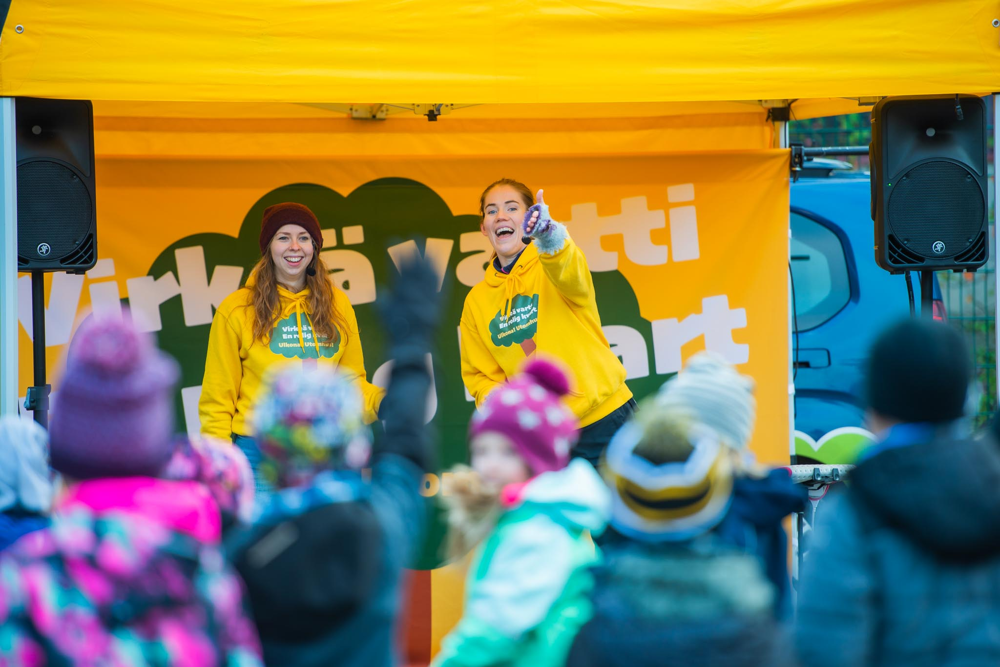
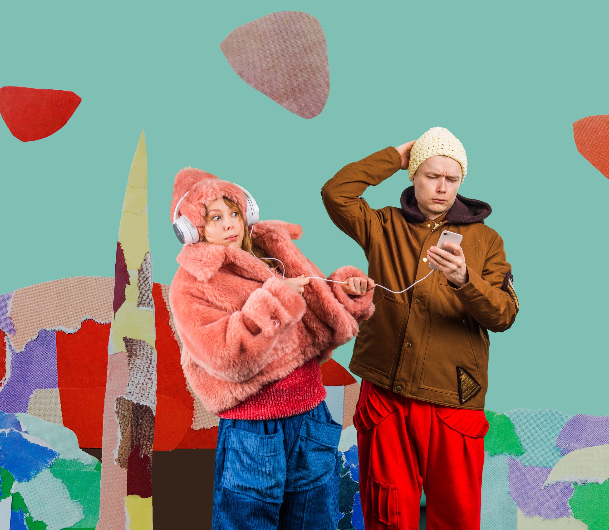
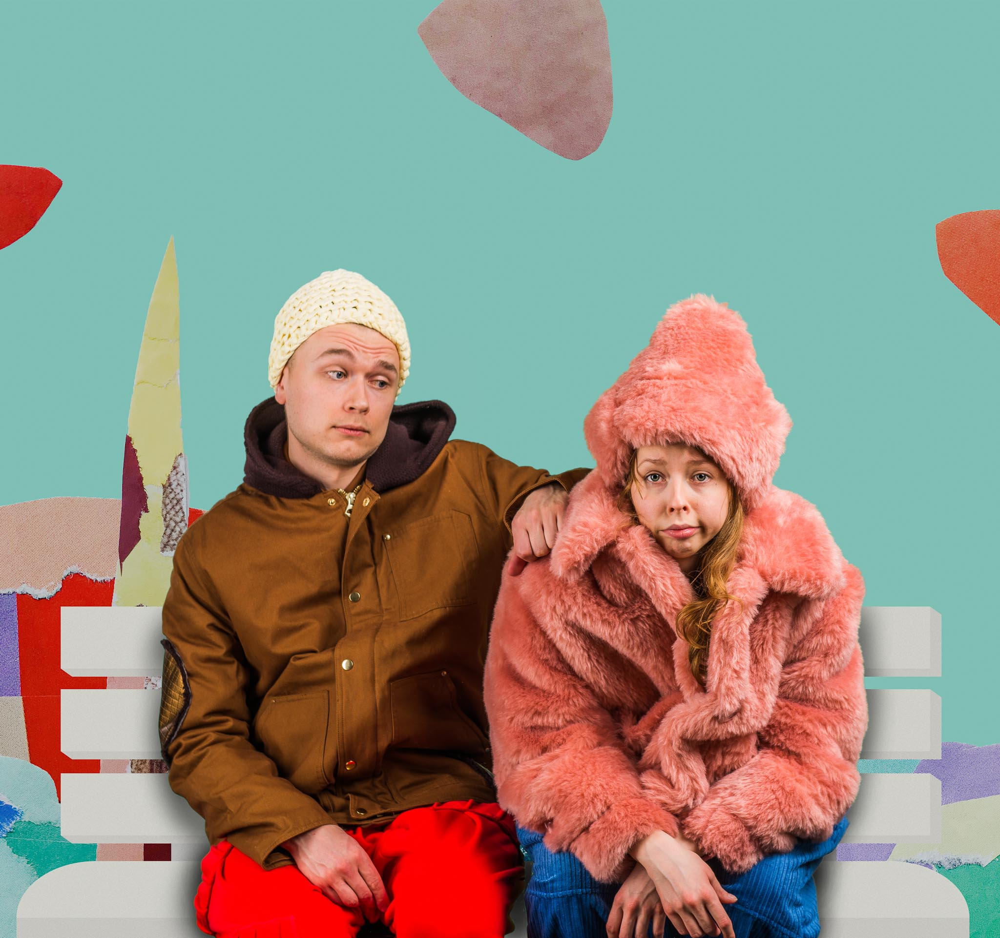
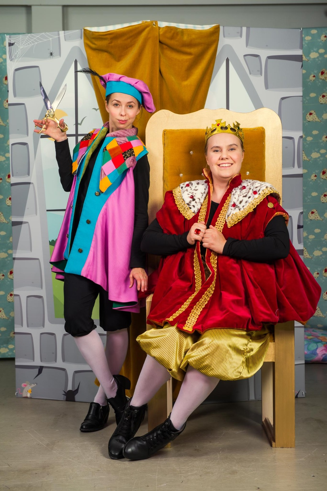
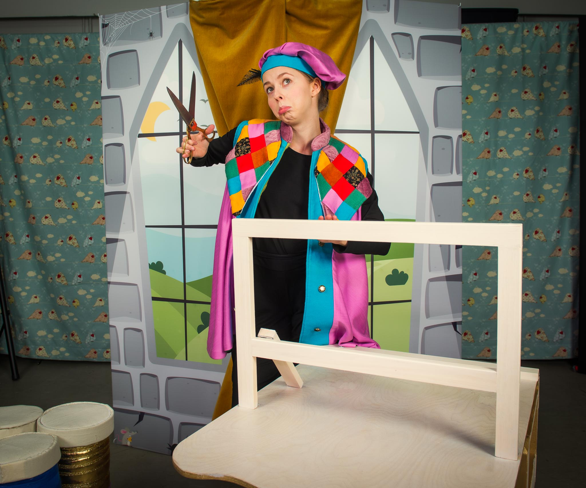
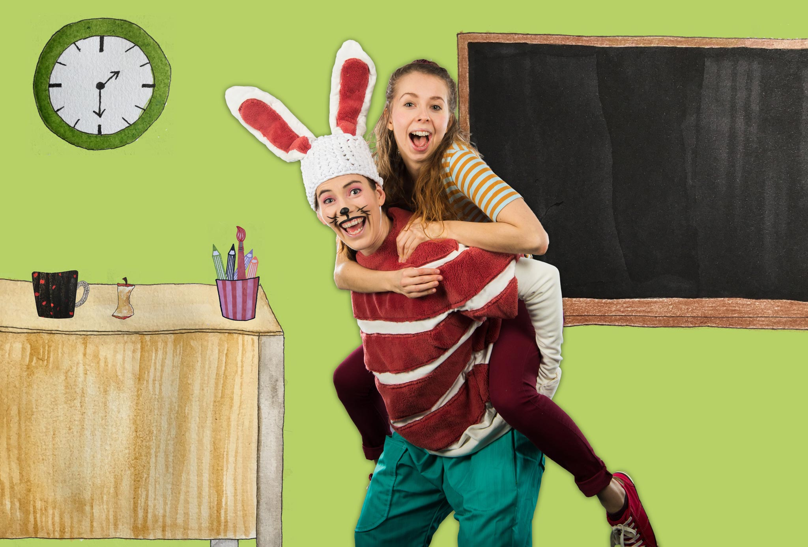
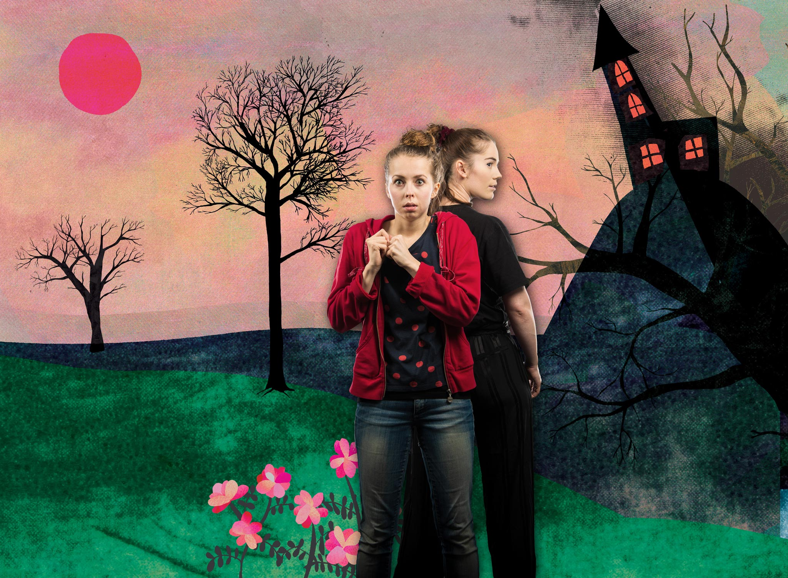
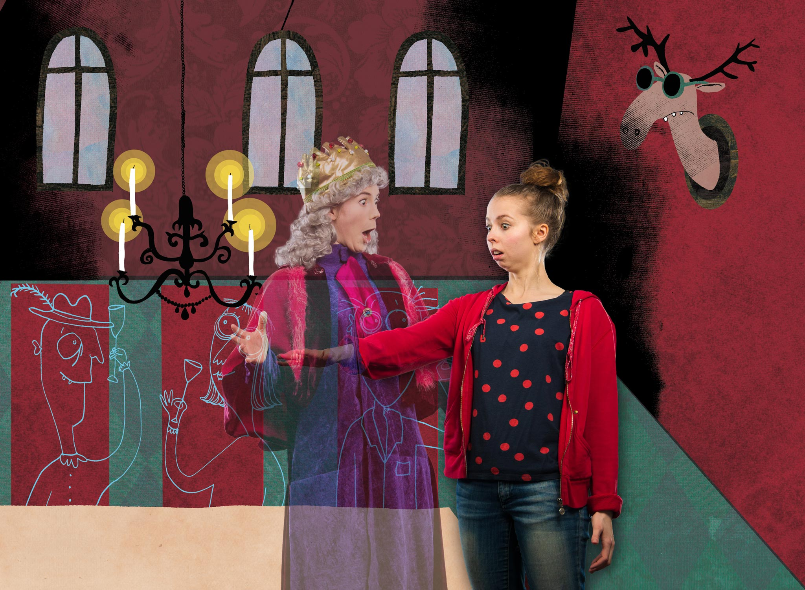
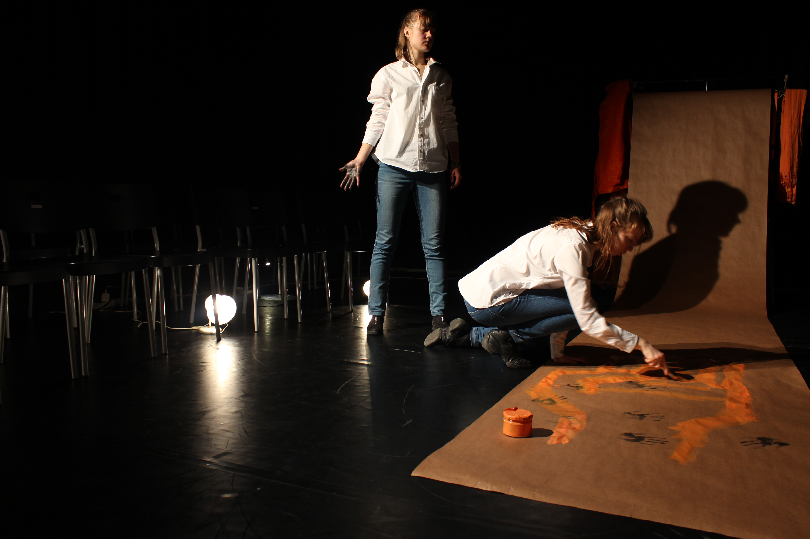
Responsible for summer activities at Barnkulturcentret Pyykkitupa.
Dramaturgy and direction.
Freelance editor for children's web news. Tasks included producing, scriptwriting, filming and editing.
Dramaturgy, directing, filming and editing of the Christmas film for Munksnäs grundskola.
Responsible for the artistic direction of touring children's theatre. Tasks included scriptwriting, directing, acting and pedagogical material design.
Original script, direction & choreography: Rosa Indigo – Du är bra! Music performance for ages 5–9.
Dramaturgy and direction.
Teacher in basic arts education for children.
Courses in forum theatre for social work and performing arts pedagogy students.
Co-founded the theatre association. Performed in Ta det som en komplimang, a touring forum theatre production.
Scriptwriting and acting in forum theatre production on school tour.
Actor in dramatized museum guiding for children.
Master of Arts — Arts Management, Society and Creative Entrepreneurship
Performing Arts Pedagogue / Cultural Producer
2024 · Forum Theatre: Rainbow of Desire method — Jana Sanskriti (Gävle, Sweden)
2018 · International training for Theatre of the Oppressed — Centro de Teatro do Oprimido (Rio de Janeiro, Brazil)
2017 · Peace School leadership training — Finnish Peace League